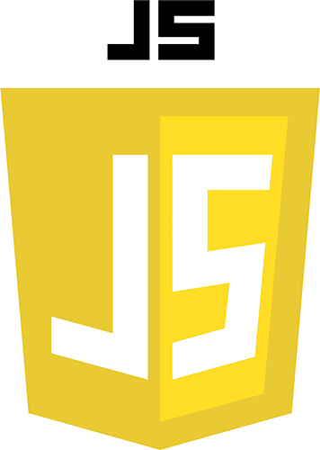

.daleyWeb.Developer
Final Fantasy VII:R Product Page
Being a massive Final Fantasy fan, upon the release of FFVII:Remake I felt it was 100% necessary to make it the theme of my responsive web design submission for freeCodeCamp. I particularly enjoyed making a theme with a darker appeal, and using that very FF7 Mako green.

Captive Design Studio
I had a great time working on the Captive Design Studio site, the use of strong fonts and powerful colors was an absolute must to pull this design off and it came out looking fantastic. Definitely learned a lot about making an impact from this one.

JavaScript Magic 8-ball
Had some fun and made a small Magic 8-Ball web app using some basic HTML, CSS shapes and simple JavaScript switch statement logic.

- see less
